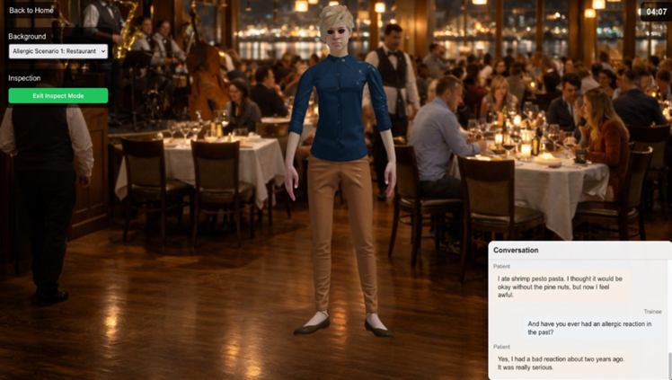

AI simulation platform
Alexandria Virtual Patient

AI-powered EMS simulation platform with a TypeScript backend, multilingual embeddings, ChromaDB retrieval, real-time Socket.IO architecture, and an LLM-driven progress evaluator. Built for scenario-based medical decision practice with measurable retrieval quality underpinning every simulation run.
- Designed for scenario-based medical decision practice with real-time state changes.
- Connects RAG retrieval, evaluator agents, and interactive simulation flow.
- RAG pipeline evaluated across 104 queries — MRR of 0.85 and Recall of 0.70 at K=7.
RAG evaluation results
104 queries · multilingual-e5-large embeddings · ChromaDB
| Metric | Target | K=1 | K=3 | K=5 ★ | K=7 | K=10 |
|---|---|---|---|---|---|---|
| Top-K Accuracy | ≥ 0.60 | 0.44 | 0.56 | 0.55 | 0.58 | 0.61 |
| MRR | ≥ 0.80 | 0.44 | 0.74 | 0.81 | 0.85 | 0.84 |
| Precision@K | ≥ 0.25 | 0.44 | 0.33 | 0.27 | 0.22 | 0.18 |
| Recall@K | ≥ 0.60 | 0.21 | 0.46 | 0.61 | 0.70 | 0.79 |
MRR 0.81 at K=5 — first-rank quality matters most
In a medical simulation, the first chunk the LLM reads heavily shapes the patient response. An MRR of 0.81 means the correct EMS protocol or symptom context lands in the top 1–2 results for most queries, keeping the AI patient's behavior grounded in real clinical data.
Recall 0.61 at K=5 — coverage across multi-step protocols
EMS procedures involve multi-step decision trees (assessment → intervention → transport). A recall of 0.61 means the retriever surfaces most relevant protocol chunks per query, reducing hallucinated steps in the simulation's evaluator agent.
Precision drops with K — noise tradeoff is managed
Precision@K falls from 0.44 at K=1 to 0.27 at K=5. The confidence gating layer in the retriever filters low-relevance chunks before LLM context injection, making this tradeoff acceptable — more recall without proportionally more hallucination risk.
K=5 chosen — optimal across all four metrics
K=5 is the point where MRR and Recall both cross their targets while Precision stays above 0.25. Higher K improves recall further but degrades precision and increases LLM context window load during real-time simulation turns.